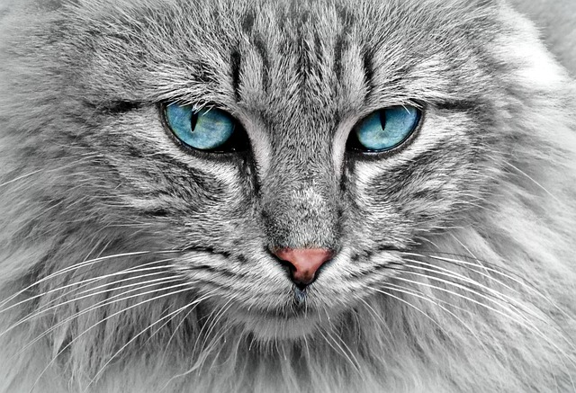

Os gatos são felinos fascinantes, conhecidos por sua agilidade, independência e apego sutil. Com expectativa de vida de 12 a 18 anos,
eles se destacam pelos sentidos apurados (especialmente a visão noturna e a audição)
e por uma linguagem corporal complexa e expressiva.
